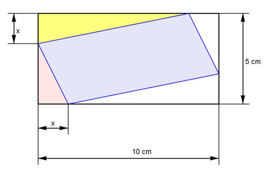
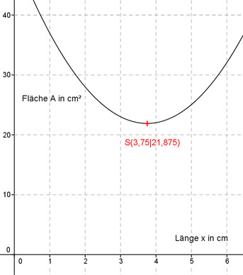

Aufgabe 113 Für welche Länge x wird die blaue Fläche A am kleinsten?  Blaue Fläche A = 10 cm*5 cm - 2*gelbe Fläche - 2*rote Fläche Die gelbe und die rote Fläche sind jeweils rechtwinklige Dreiecke. x * (10 - x) Gelbe Fläche = --------------- 2 x * (5 - x) Rote Fläche = -------------- 2 Blaue Fläche: x * (10 - x) x * (5 - x) A = 10 cm * 5 cm - 2 * -------------- - 2 * ------------- 2 2 Blaue Fläche A = 50 cm² - 10x + x2 - 5x + x2 A(x) = 2x2 - 15x + 50 Dies ist die Funktionsgleichung einer nach oben geöffneten, gestreckten Parabel, deren tiefster Punkt der Scheitelpunkt ist. A(x) = 2x2 - 15x + 50 | :2 A(x) ---- = x2 - 7,5x + 25 2 Quadratische Ergänzung: A(x) ---- = x2 - 7,5x + 14,0625 - 14,0625 + 25 2 mit x2 - 7,5x + 14,0625 = (x - 3,75)2 A(x) ---- = (x - 3,75)2 + 10,9375 |*2 2 A(x) = (x - 3,75)2 + 21,875 Scheitelpunkt abgelesen: S(3,75|21,875) Die Scheitelpunktkoordinaten bedeuten: Ist die Länge x = 3,75 cm entsteht die kleinste Fläche A = 21,875 cm². 